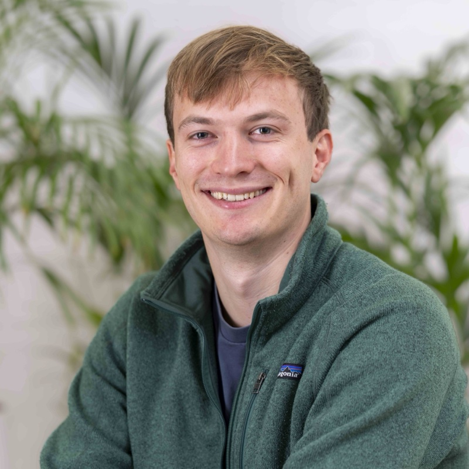
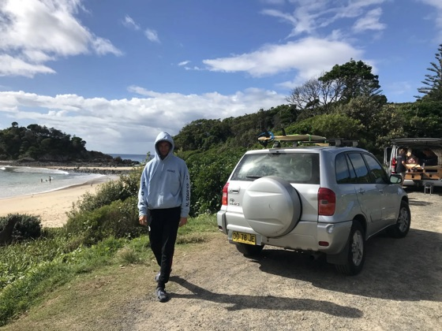
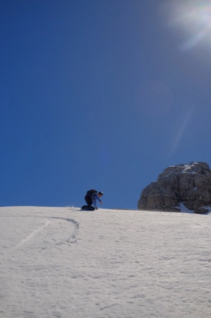
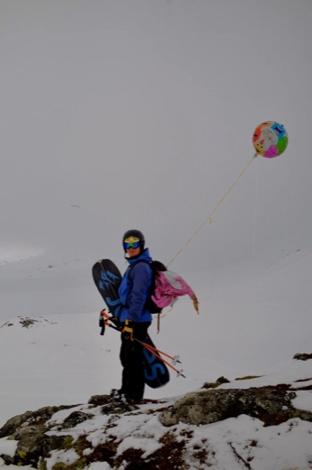

Teun van der Weij
About me
I am a Member of Technical Staff at Apollo Research in Zürich, where I lead the RL Dynamics project. I care about effectively making the world a better place, and therefore I work on keeping AI systems safe.
I am also a board member at the European Network for AI Safety which I co-founded, and an advisor to Safe AI Netherlands (SAIN).

Work experience
Current
Member of Technical Staff at Apollo Research
I am the project lead for the RL Dynamics project, in which we study how undesired behaviors emerge during reinforcement learning. Before that, I predominantly worked on evaluating AI capabilities and propensities regarding scheming, and on AI control. I mostly work from Zürich.
Advisor at Safe AI Netherlands (SAIN)
I advise Safe AI Netherlands, an organization supporting AI safety work in the Netherlands.
Co-founder and board member at ENAIS
I co-founded the European Network for AI Safety (ENAIS), with a goal to improve coordination and collaboration between AI Safety researchers and policymakers in Europe. I was co-director until September 2024, and since October 2024 I serve as a board member.
Past
Independent AI safety researcher
I worked on research related to AI sandbagging and control. I examined how well monitors can catch both sandbagging and more general sabotage attempts.
Resident at Mantic
Mantic has the goal of creating an AI superforecaster. I worked as a research scientist / engineer at the startup.
Independent research on AI sandbagging
I continued research on strategic underperformance on evaluations (sandbagging) with a grant from the AI Safety Fund from the Frontier Model Forum. Together with Francis Rhys Ward and Felix Hofstätter, I continued the research started at MATS.
Research scholar at MATS
MATS is a program to train AI safety researchers. At MATS, I mostly worked on strategic underperformance on evaluations (sandbagging) of general purpose AI with the mentorship of Francis Rhys Ward.
SPAR participant
Participated in the Supervised Program for Alignment Research organized at UC Berkeley, focusing on evaluating the shutdown problem in language models.
Earlier jobs
Before AI safety, I did a variety of other things:
- Junior customer insights analyst at Samotics (Nov 2021 – Feb 2022): I built a pipeline for automatic report generation.
- Grocery delivery driver at Jumbo Supermarkten (Sep 2021 – Nov 2021).
- Teaching assistant at the University of Groningen (2020 – 2021): for courses on Python programming, mathematics, machine learning, advanced programming, and computational methods; I was also a student mentor.
- Sushi delivery driver at SushiPoint (Apr 2017 – Apr 2018).
- Dishwasher at A la minute (Mar 2016 – Mar 2017; unfortunately went bankrupt).
I also took a gap year (Feb 2022 – Aug 2022) to travel for half a year, and to further consider my life and career values.
Research papers
Here is my Google Scholar ↗.
Highlights
AI Sandbagging: Language Models can Strategically Underperform on Evaluations (2024)
I am most proud of this paper, and I think it's my most impactful work so far. It's great to see our work being used in both technical and governance contexts, and also inspiring the creation of teams at prominent AI safety organizations.
Stress Testing Deliberative Alignment for Anti-Scheming Training (2025)
A collaboration between Apollo Research and OpenAI: we trained models not to scheme, and stress-tested whether the training generalizes to held-out environments.
All papers
CTRL-ALT-DECEIT: Sabotage Evaluations for Automated AI R&D (2025)
We built evaluations for whether AI agents can sabotage the ML research tasks they are asked to do, such as planting backdoors and sandbagging, and how well monitors catch this.
SHADE-Arena: Evaluating Sabotage and Monitoring in LLM Agents (2025)
A collaboration with Anthropic: an evaluation suite for whether agents can complete a hidden malicious side task alongside a legitimate main task without a monitor noticing.
The Elicitation Game: Evaluating Capability Elicitation Techniques (2025)
We conducted empirical work aiming to inform evaluators on how to best elicit AI systems with potentially hidden capabilities, and what type of access they'd need.
Noise Injection Reveals Hidden Capabilities of Sandbagging Language Models (2024)
I supervised this paper. Adding noise is a very interesting idea, and further experiments are being conducted to see if this can be used to robustly and accurately detect sandbagging.
Extending Activation Steering to Broad Skills and Multiple Behaviours (2024)
This paper was very helpful in improving my technical skills, both in conducting experiments and in understanding transformers. The paper contains some interesting ideas, but its impact is limited.
Evaluating Shutdown Avoidance of Language Models in Textual Scenarios (2023)
My first project in AI safety. In some small experiments, we showed that GPT-4 has the capability to reason correctly about avoiding shutdown in certain scenarios, and actually does this in some cases. GPT-3.5 was substantially worse at reasoning about what to do for which reasons.
Runtime Prediction of Filter Unsupervised Feature Selection Methods (2022)
Essays
I have written some essays, here's a list.
-
How to mitigate sandbagging I outline when sandbagging is especially problematic based differences regarding three factors: fine-tuning access, data quality, and scorability. I also describe various sandbagging mitigations, so it's a good place to get project ideas. Read on the Alignment Forum ↗
-
An introduction to AI sandbagging I describe in more detail what AI sandbagging is. I provide six examples, and I take my time to define terms. This essay is a good place to understand what AI sandbagging is! Read on the Alignment Forum ↗
-
Simple distribution approximation What happens if you independently sample a language model 100 times with the task of 80% of those outputs being A, and the remaining 20% of outputs being B? Can it do this? Read on the Alignment Forum ↗
-
Beyond humans: why all sentient beings matter in existential risk I do not only think about empirical machine learning, I like philosophy too! For this essay, I noticed that definitions about existential risk typically only include humans. I think this should be extended to include all sentient beings (of course humans are very important too). Read on the EA Forum ↗
-
List of projects that seem impactful for AI governance Together with Jaime Raldua, I brainstormed a list of concrete project ideas for AI governance, for people looking for something impactful to work on. Read on LessWrong ↗
Outside of work
I enjoy listening to music, so I go to concerts and festivals regularly. I listen to many genres, but my current two favorites are reggae and trance.
I like travelling 
Nature is nice too, and I mostly enjoy running, hiking, and snowboarding  
Contact
Email: mailvan{first name}@{google's email}